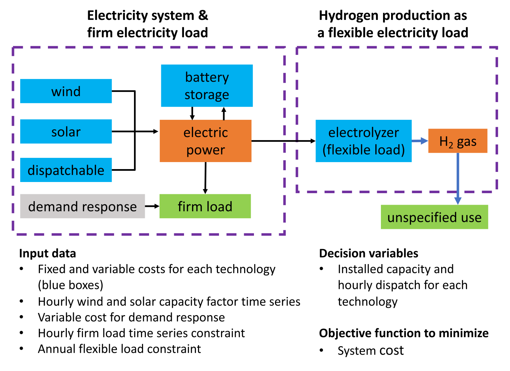
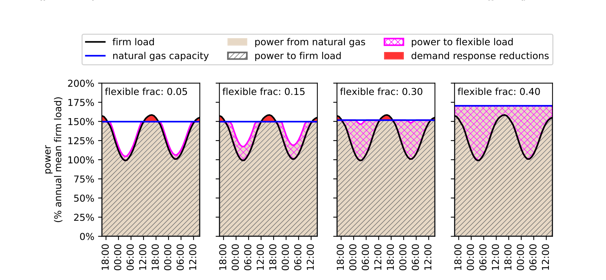
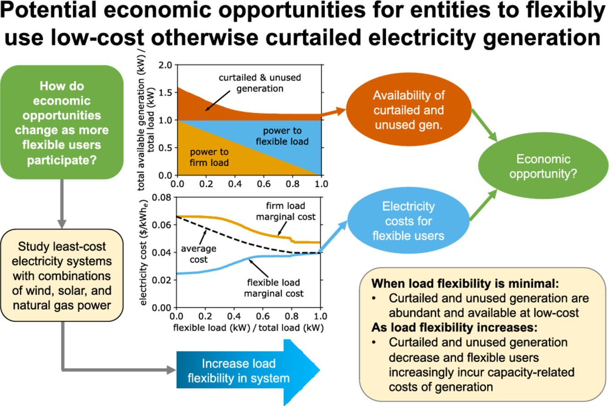

There has been a lot of talk about making electrolytic “Green Hydrogen” using electricity from wind and solar power that would otherwise be curtailed. Less climatically helpful, there is also potential to use electricity from natural gas generators that would otherwise be idled.
Tyler Ruggles set out to answer the questions:
- How much additional flexible load could we put on electricity systems before we would need to add more generating capacity?
- In an economically efficient system, how would the fixed generation costs be allocated across fixed and flexible loads?
This study was published in Advances in Applied Energy under the title, “Opportunities for flexible electricity loads such as hydrogen production from curtailed generation”.
Tyler H. Ruggles, Jacqueline A. Dowling, Nathan S. Lewis, Ken Caldeira, Opportunities for flexible electricity loads such as hydrogen production from curtailed generation, Advances in Applied Energy 3, 100051, 2021.
The system considered by Tyler is represented by the following figure:

The system considers several generators, a fixed (i.e. specified and unchangeable) electricity load, and a flexible electricity load, here represented as electrolytic production of hydrogen gas. The dispatchable generator can be thought of as something akin to natural gas, but is left unspecified.
The basic results are summarized in this figure:
![Six panels in two rows, for the Dispatch, Dispatch+Renew+Storage, and Renew+Storage scenarios. The top row plots marginal cost of electricity against flexible load fraction: the flexible load marginal cost starts near zero and rises to meet the firm load marginal cost, most dramatically in the Renew+Storage case where it starts at zero. The bottom row shows generation divided by total load, with a large wedge of curtailed wind and solar at low flexible load fractions that shrinks as flexible load grows.](images/how-much-hydrogen-could-we-produce-without-adding-additional-generation-capacity/fig2.png)
The last column (Renew+Storage) is perhaps the most relevant to ongoing discussions of “Green Hydrogen”. In this case, all electricity is produced with wind and solar power. Because of the high cost of storage, with low amounts of flexible load, it is economically efficient to build extra wind and solar generation and then discard some of this potential generation much of the time (curtailment).
However, if we have a lot of excess wind and solar capacity, that means there should be times when there is some excess generation capacity that is going unused. Tyler showed that, with a system sized to meet peak demands, there is some underutilized capacity nearly all the time. Because this underutilized wind and solar capacity has effectively zero variable cost, this excess electricity generation can be offered for free.
Because systems are sized to meet peak demand and there is almost always some underutilized generating capacity, a small amount of flexible load can be added to the system at effectively zero electricity cost and operate at high capacity factors.
The problem is, as additional flexible load is added, there is less and less unclaimed free electricity to go around, and so additional flexible loads need to operate at lower capacity factor, or additional generating capacity would need to be added to the system.
Both of these things cost money.
As can be seen from the above figure, flexible loads can be added to the system with effectively zero additional generating capacity to the point where the flexible load is about 20% of total load.
In other words, if a system is built to satisfy firm loads, it is likely that an additional 25% of that fixed load can be used to satisfy flexible loads without any additional capacity expansion.
Between about 0.2 and 0.8 (20% and 80% of total load) in the above figures, there is a transition zone, where adding more flexible load would motivate building additional generating capacity, and so the flexible load would need to contribute to this capacity expansion.
When the flexible load is already representing over 80% of the total load, additional flexible load basically requires 1-for-1 expansion of generating capacity and so the flexible load bears the full cost of capacity expansion.

The figure above illustrates this transition. Below a flexible fraction of total load equal to 0.30 in this example, the flexible load draws primarily on capacity that was built to help meet peak electricity demands. Thus the flexible load can largely be a free rider.
But at a flexible fraction of total load equal to 0.40, additional capacity must be added to meet this flexible load. In this case, the flexible load would need to pay for that capacity expansion.
Tyler created this graphical abstract in an attempt to summarize the findings of this study.

As an aside, Tyler has training as a high energy physicist and was working at CERN when I hired him as a postdoctoral research scientist in our group. His most highly cited paper is about Higgs bosons.
My experience is that the most valuable qualities in a scientist include things like creativity, intelligence, work ethic, ability to complete projects, ability to work well with others, writing skills, math skills, etc. These are qualities that Tyler has in abundance.
Our goal is to do simple analyses to highlight fundamental principles. Smart people can learn domain knowledge quickly. This is the kind of analysis for which physicists are well suited.
This study has come to conclusions that are likely to stand the test of time:
- In systems designed to meet variable fixed loads, there is almost always some excess generating capacity and so almost always some electricity available to power flexible loads at the variable cost of the generator.
- As this excess capacity is increasingly utilized, typically when flexible loads exceed 20% of total demand, additional flexible loads will require some additional generating capacity, and in an economically efficient system this cost will be shared between fixed and flexible loads.
- When flexible loads exceed about 80% of total demand, nearly every increase in flexible load requires a corresponding increase in generating capacity and so the flexible load would bear the full cost of this capacity expansion.